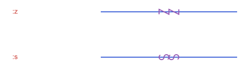

Marks, Labels & Decorations
The little things that turn a construction into a figure: the ticks that say two sides are equal, the arcs that mark equal angles, arrowheads, braces, labels placed next to the right point, dotted guides to the axes, a grid.
Every one of them follows the same plan. The function computes geometry, a Vector of ordinary objects (APSegment, APCircularArc2, APTriangle...), and path draws it. Nothing here needs Luxor until the drawing step, so all the examples on this page run without it.
Two rules from Conventions & FAQ matter here. Sizes are in the units of the objects you pass, so build decorations from the objects returned by @prepare_to_picture to get sizes in canvas units. And functions that choose a side or a compass direction read the coordinates as drawn, with y growing downward.
| You want | Function |
|---|---|
| The point and direction at some position of a curve | tangent_at |
| Ticks or symbols on a segment, arc or angle | marks |
| An arrowhead in the middle or at the end | arrow_head |
| A curly brace and its label position | brace, brace_anchor |
| Where to put a text label | label_anchor |
| Dotted lines from a point to the axes | coordinate_guides |
| A grid and the coordinate axes | grid_lines, axes_lines |
| A line lengthened by a fraction of its length | extend_line |
A point and a direction: tangent_at
tangent_at(obj, t) gives the point of obj at parameter t and the unit tangent there, as an APEquipollentVector: a vector with a point of application, which is exactly what a decoration needs. It works on segments, lines, rays and the four conic arcs, with the same t as point_on, and the tangent points in the direction of travel.
using Apollonius
s = APSegment(APPoint(0.0, 0.0), APPoint(10.0, 0.0))
f = tangent_at(s, 0.25)
f.point, f.vector([2.5, 0.0], ⟨1.0, 0.0⟩)On an arc the tangent turns with the curve, and at every point it is perpendicular to the radius:
circ = APCircle2(APPoint(0.0, 0.0), 5.0)
arc = APCircularArc2(circ, APPoint(5.0, 0.0), APPoint(0.0, 5.0))
mid = tangent_at(arc, 0.5)
mid.point, dot(mid.vector, mid.point - circ.center) ≈ 0.0([3.5355339059327378, 3.5355339059327373], true)
The direction of travel is the stored one, from p1 to p2. @prepare_to_picture flips the y axis, so an arc that runs counterclockwise in your coordinates comes back with its endpoints swapped and runs clockwise on the screen. Compute the decorations on the fitted objects and they follow what you see.
Equality marks: marks
marks(obj) returns count marks centered at parameter at of a segment or arc, gap apart along the tangent. size is the full length of one mark.
| Keyword | Default | Meaning |
|---|---|---|
count | 1 | how many marks |
style | :tick | the shape, see below |
at | 0.5 | where along obj, in [0, 1] |
size | 6.0 | length of one mark |
gap | 4.0 | distance between neighbouring marks |
slant | π/6 | tilt of a :slash, from the perpendicular |
style | Mark |
|---|---|
:tick | a stroke perpendicular to the curve |
:slash | a stroke tilted slant from the perpendicular |
:chevron | a > along the direction of travel, the usual mark for parallel lines |
:cross | an x, two strokes per mark |
:circle | a small circle, never closer to its neighbours than tangent |
:z | a zigzag: a Z that stands upright when the segment is vertical on the drawn canvas, so on a horizontal segment it lies on its side |
:s | an S drawn the same way, made of two arcs |
A double or triple mark is count=2 or count=3 of the same style, and a slanted tick is :slash (slant sets its tilt). The letters :z and :s are as tall as size along the segment, so gap is raised to size when it is smaller.
two_ticks = marks(s; count=2)
length(two_ticks), only(marks(s; style=:circle, size=2.0))(2, APCircle2([5.0, 0.0], 1.0))
See script
using Apollonius, Luxor
import Luxor: julia_red, julia_blue, julia_green, julia_purple
styles = [:tick, :slash, :chevron, :cross, :circle]
lxm = @prepare_to_picture! flip=false width=500 height=240 margin=20 begin
segs = [APSegment(APPoint(4.0, 2.0 * (5 - i)), APPoint(10.0, 2.0 * (5 - i))) for i in 1:5]
names = [APPoint(0.0, 2.0 * (5 - i)) for i in 1:5]
end
begin
Drawing(lxm.width, lxm.height, :svg)
origin(); fontsize(15)
sethue(julia_blue)
path(segs, action=:stroke)
sethue(julia_purple)
for (s, style) in zip(segs, styles)
path(marks(s; count=2, style=style, size=20, gap=12); action=:stroke)
end
sethue(julia_red)
for (p, style) in zip(names, styles)
label(":" * string(style), :E, p)
end
finish()
preview()
endThe two letter styles, :z and :s, stand upright on a vertical segment and lie on their side on a horizontal one, so gap is raised to size for them automatically:
z_marks = marks(s; style=:z, count=2)
s_marks = marks(s; style=:s)
length(z_marks), all(x -> x isa APPolyline2, z_marks), length(s_marks), all(x -> x isa APCircularArc2, s_marks)(2, true, 2, true)
See script
using Apollonius, Luxor
import Luxor: julia_red, julia_blue, julia_green, julia_purple
styles = [:z, :s]
lxm = @prepare_to_picture! flip=false width=500 height=140 margin=20 begin
segs = [APSegment(APPoint(4.0, 2.0 * (2 - i)), APPoint(10.0, 2.0 * (2 - i))) for i in 1:2]
names = [APPoint(0.0, 2.0 * (2 - i)) for i in 1:2]
end
begin
Drawing(lxm.width, lxm.height, :svg)
origin(); fontsize(15)
sethue(julia_blue)
path(segs, action=:stroke)
sethue(julia_purple)
for (s, style) in zip(segs, styles)
path(marks(s; count=2, style=style, size=20, gap=12); action=:stroke)
end
sethue(julia_red)
for (p, style) in zip(names, styles)
label(":" * string(style), :E, p)
end
finish()
preview()
endMarks lie on the tangent at at, so with a small gap they follow the curve closely. On a circular arc a tick lies along a radius:
tick = only(marks(arc; size=1.0))
is_on_line(circ.center, APLine(tick.p1, tick.p2))true
See script
using Apollonius, Luxor
import Luxor: julia_red, julia_blue, julia_green, julia_purple
lxm = @prepare_to_picture! width=500 height=240 margin=20 begin
arc = APCircularArc2(APCircle2(APPoint(0.0, 0.0), 5.0), APPoint(5.0, 0.0), APPoint(-5.0, 0.0))
end
begin
Drawing(lxm.width, lxm.height, :svg)
origin()
sethue(julia_blue)
path(arc, action=:stroke)
sethue(julia_purple)
path(marks(arc; at=0.2, count=1, style=:tick, size=14); action=:stroke)
path(marks(arc; at=0.5, count=2, style=:chevron, size=14, gap=9); action=:stroke)
path(marks(arc; at=0.8, count=1, style=:circle, size=10); action=:stroke)
finish()
preview()
endsize and gap use the units of the object you pass. On the original coordinates of a small figure the default mark, 6 units long, can be longer than the side it marks. Decorate the fitted objects, as in Workflow: From Construction to Figure.
Marks on an angle
For an APAngle2, marks has two modes. The default style = :arcs gives count concentric arcs centered at the vertex, the classic way to say two angles are equal. Any other style puts count symbols on the arc instead, with the size of each symbol in mark_size.
| Keyword | Default | Meaning |
|---|---|---|
count | 1 | arcs, or symbols |
style | :arcs | :arcs, or any style from the table above |
size | 0.15 × the shorter ray | radius of the first arc |
gap | 4.0 | radial gap between arcs, or gap between symbols |
mark_size | 6.0 | size of each symbol, when style is not :arcs |
at | 0.5 | where the symbols sit along the arc |
arcs | 0 | with a symbol style, also draw this many arcs and center the symbols across them |
ang = APAngle2(APPoint(0.0, 0.0), APPoint(4.0, 0.0), APPoint(0.0, 4.0))
arcs = marks(ang; count=2, size=0.8, gap=0.3)
[a.circle.r for a in arcs]2-element Vector{Float64}:
0.8
1.1
See script
using Apollonius, Luxor
import Luxor: julia_red, julia_blue, julia_green, julia_purple
lxm = @prepare_to_picture! width=500 height=240 margin=20 begin
angs = [APAngle2(
APPoint(8.0 * (i - 1), 0.0),
APPoint(8.0 * (i - 1) + 6.0, 0.0),
APPoint(8.0 * (i - 1) + 4.0, 4.0)) for i in 1:3]
rays = [APSegment(a.vertex, x) for a in angs for x in (a.a, a.b)] #for bb
end
begin
Drawing(lxm.width, lxm.height, :svg)
origin()
sethue(julia_blue)
path(rays, action=:stroke)
sethue(julia_purple)
for (i, a) in enumerate(angs)
path(marks(a; count=i, size=26, gap=6); action=:stroke)
end
finish()
preview()
endTo combine arcs and a symbol, pass arcs: the result has that many concentric arcs plus the symbols, centered between the first and the last arc and at least as long as the arcs are spread out plus one gap, so a :tick crosses every arc.
m = marks(ang; style=:tick, arcs=2, size=0.8, gap=0.3, mark_size=0.3)
count(x -> x isa APCircularArc2, m), count(x -> x isa APSegment, m)(2, 1)In the first panel arcs=2 puts a tick across two arcs. The other five panels show each symbol style.

See script
using Apollonius, Luxor
import Luxor: julia_red, julia_blue, julia_green, julia_purple
styles = [:tick, :slash, :chevron, :cross, :circle]
lxm = @prepare_to_picture! width=500 height=240 margin=20 begin
angs = [APAngle2(APPoint(8.0 * mod(i - 1, 3), -6.0 * fld(i - 1, 3)), APPoint(8.0 * mod(i - 1, 3) + 6.0, -6.0 * fld(i - 1, 3)), APPoint(8.0 * mod(i - 1, 3) + 4.0, 4.0 - 6.0 * fld(i - 1, 3))) for i in 1:6]
rays = [APSegment(a.vertex, x) for a in angs for x in (a.a, a.b)]
end
begin
Drawing(lxm.width, lxm.height, :svg)
origin()
sethue(julia_blue)
path(rays, action=:stroke)
sethue(julia_purple)
path(marks(angs[1]; style=:tick, arcs=2, size=26, gap=6); action=:stroke)
for (a, style) in zip(angs[2:end], styles)
path(marks(a; count=2, style=style, size=36, mark_size=16, gap=13); action=:stroke)
end
finish()
preview()
endAn APAngle2 is the wedge swept counterclockwise from a to b, and the marks go on that wedge. Swapping a and b marks the other one. If you give the points in drawn coordinates (y downward), the counterclockwise wedge looks reversed on the screen.